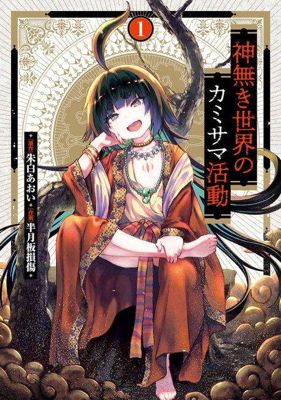

KamiKatsu: Working for God in a Godless World
神無き世界のカミサマ活動
Yukito, the heir of a cult, dies and is reborn in a world with no gods, and decides to create a religion there.
After the anime, read the manga from Chapter 38.
6.5AniList score
—Animeter, no votes yet
12episodes
Rate it or report where you stopped
Anime finished. Where does the manga pick up?
Start at Chapter38
The anime adapts up to the end of chapter 37, so start at chapter 38. The manga is still ongoing.
137ongoing
Season 1Start reading here
More like KamiKatsu: Working for God in a Godless World
 Manga Ch. 1178.2
Manga Ch. 1178.2
 Film7.5
Film7.5
 Original8.5
Original8.5
 Done8.5
Done8.5
 Original7.6
Original7.6
 Manga Vol. 57.3
Manga Vol. 57.3
 Done8.6
Done8.6
 Done8.3
Done8.3
Unclear6.9
Pop Team Epic Manga Ch. 1018.7
Manga Ch. 1018.7
 Novel ahead7.9
Novel ahead7.9
 Original7.8
Original7.8